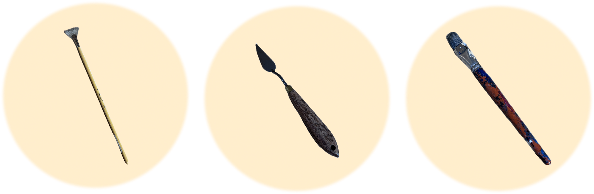

Règles
Pour retrouver ses outils, reforme les œuvres d'art à travers plusieurs puzzles. d'œuvres d'art sur votre téléphone pour localiser des outils cachés dans le musée. Dirigez-vous vers les œuvres physiques, découvrez les outils, notez les codes secrets. Soyez rapide, car une compétition amicale vous attend, et chaque participant joue un rôle crucial dans la préservation de l'héritage artistique du Maître Filibert.
Voici les trois objets que tu devras récupérés :

COMMENCER